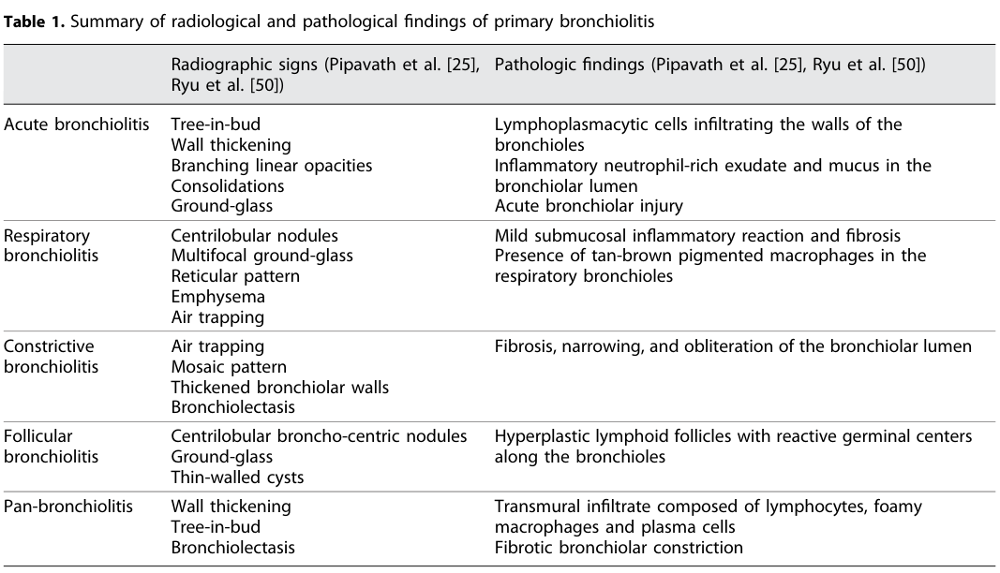

Silo filler disease is acute chemical lung injury from inhaling nitrogen dioxide that accumulates in a freshly filled silo. Plant nitrate in the ensiled forage is reduced during early fermentation to nitrogen oxides, which collect as a dense gas in the unventilated headspace; a worker entering during the first days after filling inhales concentrations that can exceed the level immediately dangerous to life. Because nitrogen dioxide is poorly soluble it passes the upper airway and reaches the bronchioles and alveoli, where it forms acid and free radicals and injures the epithelium. The injury is characteristically delayed by hours, so a worker who feels only mild irritation can develop non-cardiogenic pulmonary edema and acute respiratory distress syndrome afterwards, and survivors may go on to bronchiolitis obliterans. It is a disease of young, previously healthy farm workers, it concentrates in the harvest weeks, and it is almost entirely preventable.
Ask a research question about Silo Filler Disease. OpenScientist will conduct autonomous deep research using the Disorder Mechanisms Knowledge Base and PubMed literature (typically 10-30 minutes).
Do not include personal health information in your question. Questions and results are cached in your browser's local storage.
Conditions with similar clinical presentations that must be differentiated from Silo Filler Disease:
name: Silo Filler Disease
creation_date: "2026-10-07T17:11:49Z"
category: Environmental
categories:
- Occupational Lung Disease
- Toxic Inhalation Injury
- Toxic Exposure Disorder
synonyms:
- silo-filler's disease
- silo filler's syndrome
- silo gas poisoning
- nitrogen dioxide pulmonary injury
description: >-
Silo filler disease is acute chemical lung injury from inhaling nitrogen
dioxide that accumulates in a freshly filled silo. Plant nitrate in the ensiled
forage is reduced during early fermentation to nitrogen oxides, which collect
as a dense gas in the unventilated headspace; a worker entering during the
first days after filling inhales concentrations that can exceed the level
immediately dangerous to life. Because nitrogen dioxide is poorly soluble it
passes the upper airway and reaches the bronchioles and alveoli, where it forms
acid and free radicals and injures the epithelium. The injury is characteristically
delayed by hours, so a worker who feels only mild irritation can develop
non-cardiogenic pulmonary edema and acute respiratory distress syndrome
afterwards, and survivors may go on to bronchiolitis obliterans. It is a
disease of young, previously healthy farm workers, it concentrates in the
harvest weeks, and it is almost entirely preventable.
disease_term:
preferred_term: silo filler disease
term:
id: MONDO:0006972
label: silo filler disease
mappings:
mondo_mappings:
- term:
id: MONDO:0006972
label: silo filler disease
mapping_predicate: skos:exactMatch
mapping_source: MONDO
mapping_justification: Primary MONDO disease identifier for silo filler disease.
classifications:
harrisons_chapter:
- classification_value: ENVIRONMENTAL_EXPOSURES
evidence:
- reference: PMID:30879430
reference_title: "Silo-Filler's Disease: One Health System's Experience and an Update of the Literature."
supports: SUPPORT
evidence_source: HUMAN_CLINICAL
snippet: "Silo-filler's disease, a life-threatening condition from exposure to silage gas in recently filled silos, has been known for over 5 decades now."
explanation: Identifies the disorder as an occupational inhalational exposure injury, supporting the primary Harrison's home in Occupational and Environmental Lung Disease.
- classification_value: RESPIRATORY
evidence:
- reference: PMID:627925
reference_title: "Nitrogen dioxide-induced pulmonary disease: five new cases and a review of the leterature."
supports: SUPPORT
evidence_source: HUMAN_CLINICAL
snippet: "Eighteen experienced a transient upper respiratory tract syndrome; five developed pulmonary edema or bronchiolitis obliterans."
explanation: Supports a secondary respiratory classification, and states the two-tier respiratory outcome that defines the disease.
- classification_value: CRITICAL_CARE
evidence:
- reference: PMID:31060842
reference_title: "Dose-Dependent Pulmonary Injury Following Nitrogen Dioxide Inhalation From Kinepak(™) Detonation."
supports: SUPPORT
evidence_source: HUMAN_CLINICAL
snippet: "Significant NO2 exposure results in free-radical-induced pulmonary injury that may be delayed up to 3-30 h after exposure and can progress to acute respiratory distress syndrome (ARDS) and death."
explanation: Supports a critical care classification, since the severe form is acute respiratory distress syndrome requiring intensive care.
definitions:
- name: Clinical case definition for silo filler disease
definition_type: CASE_DEFINITION
description: >-
Silo filler disease is acute pulmonary injury following inhalation of
nitrogen oxides generated by fermenting silage in a recently filled silo. The
defining features are the exposure setting, the characteristically delayed
onset of lower respiratory injury, and the two-tier outcome of a transient
upper respiratory syndrome in most of those exposed against pulmonary edema
or bronchiolitis obliterans in a minority.
scope: Disease-level clinical framing of an acute occupational inhalation injury
evidence:
- reference: PMID:1519842
reference_title: "Silo filler's disease in New York State."
supports: SUPPORT
evidence_source: HUMAN_CLINICAL
snippet: "Twenty new cases of Silo filler's disease (SFD) have been collected, documenting the incidence and clinical features of exposure to nitrogen oxides present in freshly filled silos."
explanation: Defines the disease by exposure to nitrogen oxides in freshly filled silos, which is the exposure setting the diagnosis turns on.
- reference: PMID:627925
reference_title: "Nitrogen dioxide-induced pulmonary disease: five new cases and a review of the leterature."
supports: SUPPORT
evidence_source: HUMAN_CLINICAL
snippet: "Eighteen experienced a transient upper respiratory tract syndrome; five developed pulmonary edema or bronchiolitis obliterans."
explanation: States the two-tier clinical outcome that the case definition has to accommodate, from a referral series of 23 exposed patients.
- name: Practical recognition of the delayed-onset window
definition_type: DIAGNOSTIC_CRITERIA
description: >-
The practical diagnostic problem is that the severe injury is delayed. A
worker with a documented silo exposure and only mild early symptoms cannot be
assumed well, because free-radical pulmonary injury may declare itself from 3
to 30 hours afterwards and progress to acute respiratory distress syndrome.
Recognition therefore rests on the exposure history plus an observation period
rather than on the initial examination.
scope: Clinical recognition and the observation window
evidence:
- reference: PMID:31060842
reference_title: "Dose-Dependent Pulmonary Injury Following Nitrogen Dioxide Inhalation From Kinepak(™) Detonation."
supports: SUPPORT
evidence_source: HUMAN_CLINICAL
snippet: "Significant NO2 exposure results in free-radical-induced pulmonary injury that may be delayed up to 3-30 h after exposure and can progress to acute respiratory distress syndrome (ARDS) and death."
explanation: States the delay interval and the outcome it leads to, which together define the observation window.
- reference: PMID:1519842
reference_title: "Silo filler's disease in New York State."
supports: SUPPORT
evidence_source: HUMAN_CLINICAL
snippet: "The most common presenting feature was dyspnea."
explanation: States the commonest presenting feature, which is what brings the exposed worker to attention.
parents:
- lung disorder
prevalence:
- population: Silo-associated farm workers in New York State
measure_type: ANNUAL_INCIDENCE
prevalence_class: BAND_1_5_PER_10000
rate_per_100000: 5.0
rate_denominator: PERSON_YEARS
notes: >-
Approximately 5.0 cases per 100,000 silo-associated farm workers per year,
calculated from 15 cases identified in the index period using a statewide
computerized discharge diagnosis system. The denominator is exposed farm
workers, not the general population, and ascertainment was by hospital
discharge coding so milder cases that never reached hospital are missing.
evidence:
- reference: PMID:1519842
reference_title: "Silo filler's disease in New York State."
supports: SUPPORT
evidence_source: HUMAN_CLINICAL
snippet: "allowing us to calculate an approximate annual incidence of 5.0 cases/100,000 silo-associated farm workers/yr in New York State"
explanation: States the measured annual incidence and its denominator of silo-associated farm workers.
progression:
- phase: Gas accumulation in the freshly filled silo
notes: >-
Nitrogen oxides form during the first days of fermentation and collect in the
silo headspace. A dry growing season raises plant nitrate and so increases gas
production, which is why incidence tracks the growing conditions of a
particular year.
evidence:
- reference: PMID:10730136
reference_title: "Silo gas exposure in New York state following the dry growing season of 1995."
supports: SUPPORT
evidence_source: HUMAN_CLINICAL
snippet: "A dry growing season is known to be a factor for elevating nitrate levels in corn plants and can result in increased NO2 production."
explanation: Supports the agronomic determinant of gas production, which is what makes some harvest years more dangerous than others.
- phase: Immediate exposure with mild or absent early symptoms
notes: >-
Most of those exposed experience only a transient upper respiratory syndrome
at first. This is the deceptive phase, because the absence of severe early
symptoms does not predict the outcome.
evidence:
- reference: PMID:627925
reference_title: "Nitrogen dioxide-induced pulmonary disease: five new cases and a review of the leterature."
supports: SUPPORT
evidence_source: HUMAN_CLINICAL
snippet: "Eighteen experienced a transient upper respiratory tract syndrome; five developed pulmonary edema or bronchiolitis obliterans."
explanation: Supports a mild early phase in the majority, with the severe outcomes confined to a minority of the same series.
- phase: Delayed pulmonary edema and respiratory failure
notes: >-
Free-radical pulmonary injury declares itself from 3 to 30 hours after
exposure and can progress to acute respiratory distress syndrome and death.
This is the phase that kills, and it is the reason an exposed worker needs
observation rather than reassurance.
evidence:
- reference: PMID:31060842
reference_title: "Dose-Dependent Pulmonary Injury Following Nitrogen Dioxide Inhalation From Kinepak(™) Detonation."
supports: SUPPORT
evidence_source: HUMAN_CLINICAL
snippet: "Significant NO2 exposure results in free-radical-induced pulmonary injury that may be delayed up to 3-30 h after exposure and can progress to acute respiratory distress syndrome (ARDS) and death."
explanation: States the delay interval and the progression to acute respiratory distress syndrome and death.
- reference: PMID:1519842
reference_title: "Silo filler's disease in New York State."
supports: SUPPORT
evidence_source: HUMAN_CLINICAL
snippet: "Four cases ended in death (20% mortality)."
explanation: Quantifies the fatal outcome in a 20-case series.
- phase: Late bronchiolitis obliterans with persistent impairment
notes: >-
Survivors of the severe form may develop bronchiolitis obliterans. In the
Wisconsin series that group responded to steroids but all of them still
showed persistent pulmonary dysfunction on follow-up, so recovery from the
acute episode is not the same as recovery of lung function.
evidence:
- reference: PMID:627925
reference_title: "Nitrogen dioxide-induced pulmonary disease: five new cases and a review of the leterature."
supports: SUPPORT
evidence_source: HUMAN_CLINICAL
snippet: "This latter group responded to steroid therapy but all demonstrated evidence of persistent pulmonary dysfunction on follow-up studies."
explanation: Supports persistent functional impairment after the severe form despite response to treatment.
pathophysiology:
- name: Nitrogen oxide generation in fermenting silage
description: >-
Early fermentation of ensiled forage reduces plant nitrate to nitrogen
oxides. Nitric oxide formed in the silage reacts with oxygen to give nitrogen
dioxide, which is denser than air and accumulates in the unventilated
headspace at concentrations that have been documented to exceed the level
immediately dangerous to life and health. A dry growing season raises plant
nitrate and so raises the gas yield.
biological_scale: ORGANISM
chemical_entities:
- preferred_term: nitrogen dioxide
term:
id: CHEBI:33101
label: nitrogen dioxide
evidence:
- reference: PMID:10730136
reference_title: "Silo gas exposure in New York state following the dry growing season of 1995."
supports: SUPPORT
evidence_source: HUMAN_CLINICAL
snippet: "Silo gas produced from corn fermentation may consist of oxides of nitrogen and carbon dioxide."
explanation: States the origin of the gas in corn fermentation and its nitrogen oxide content.
- reference: PMID:10730136
reference_title: "Silo gas exposure in New York state following the dry growing season of 1995."
supports: SUPPORT
evidence_source: HUMAN_CLINICAL
snippet: "The presence of potentially lethal concentrations of nitrogen dioxide (NO2) within vertical silos has been well documented."
explanation: Supports that the concentrations reached inside silos are potentially lethal rather than merely irritant.
- reference: PMID:32119426
reference_title: "Nitrogen Dioxide Toxicity."
supports: SUPPORT
quote_role: BACKGROUND
evidence_source: OTHER
snippet: "Nitric oxide reacts with oxygen to form nitrogen dioxide."
explanation: Background chemistry establishing how the nitrogen dioxide is formed from the nitric oxide released by the silage.
notes: >-
This node is a process in the silo rather than in a patient, and it is
included because it is the step that dust control and ventilation act on. The
biological_scale tag is ORGANISM as the nearest available value; the enum has
no value for an environmental process outside the body.
downstream:
- target: Nitrogen dioxide delivery to the distal airways
causal_link_type: DIRECT
description: Entering the silo during the danger period delivers the accumulated gas to the respiratory tract.
evidence:
- reference: PMID:1519842
reference_title: "Silo filler's disease in New York State."
supports: SUPPORT
evidence_source: HUMAN_CLINICAL
snippet: "All victims entered a silo during the peak danger period, and only one used recommended ventilation techniques."
explanation: Supports the step from accumulated gas to human exposure, and identifies entry during the danger period without ventilation as the act that causes it.
- name: Nitrogen dioxide delivery to the distal airways
description: >-
Nitrogen dioxide is poorly water-soluble, so it is not scrubbed by the upper
airway and reaches the bronchioles and alveoli. The sheep model makes this
causally explicit: lung-only exposure produced progressive functional
deterioration and hypoxemia, while nose-only exposure at the same
concentration produced no hypoxemia and no pathological exudation at all.
biological_scale: ORGANISM
locations:
- preferred_term: terminal bronchiole
term:
id: UBERON:0002187
label: terminal bronchiole
- preferred_term: alveolus of lung
term:
id: UBERON:0002299
label: alveolus of lung
chemical_entities:
- preferred_term: nitrogen dioxide
term:
id: CHEBI:33101
label: nitrogen dioxide
evidence:
- reference: PMID:8023332
reference_title: "Nitrogen dioxide-induced acute lung injury in sheep."
supports: SUPPORT
evidence_source: MODEL_ORGANISM
snippet: "Respiratory pattern was not significantly altered, lung mechanics changes were minimal, hypoxemia did not occur, and pathologic evidence of exudation was not apparent in nose-only, NO2-exposed sheep."
explanation: >-
The negative control for this node. Nose-only exposure at the same
concentration produced none of the injury, which is what establishes that
the gas must reach the lower airways for the disease to occur.
- reference: PMID:8023332
reference_title: "Nitrogen dioxide-induced acute lung injury in sheep."
supports: SUPPORT
evidence_source: MODEL_ORGANISM
snippet: "Five hundred ppm NO2 exposure of intubated sheep (lung-only exposure) was marked by a statistically significant, albeit small, blood methemoglobin increase."
explanation: Supports lung-only delivery producing a measurable systemic effect, the positive arm of the same comparison.
downstream:
- target: Free-radical and acid injury of bronchiolar and alveolar epithelium
causal_link_type: DIRECT
description: Nitrogen dioxide reaching the distal airways generates acid and free radicals that injure the epithelium.
evidence:
- reference: PMID:31060842
reference_title: "Dose-Dependent Pulmonary Injury Following Nitrogen Dioxide Inhalation From Kinepak(™) Detonation."
supports: SUPPORT
evidence_source: HUMAN_CLINICAL
snippet: "Significant NO2 exposure results in free-radical-induced pulmonary injury that may be delayed up to 3-30 h after exposure"
explanation: States free-radical-induced pulmonary injury as the consequence of significant exposure, which is the step this edge asserts.
- name: Free-radical and acid injury of bronchiolar and alveolar epithelium
description: >-
Nitrogen dioxide reacting with airway lining fluid generates acid and
reactive species that injure bronchiolar and alveolar epithelium. In sheep,
lavage fluid epithelial cell number and total protein both rose while
macrophage number fell, and histology at 24 hours showed patchy edema, mild
hemorrhage and mixed leukocyte infiltration. The injury is slow to declare
itself, which is the clinically dangerous feature.
biological_scale: CELLULAR
locations:
- preferred_term: terminal bronchiole epithelium
term:
id: UBERON:0001958
label: terminal bronchiole epithelium
cell_types:
- preferred_term: epithelial cell of the distal airway
term:
id: CL:0000082
label: epithelial cell of lung
- preferred_term: neutrophil
term:
id: CL:0000775
label: neutrophil
biological_processes:
- preferred_term: response to oxidative stress
modifier: INCREASED
term:
id: GO:0006979
label: response to oxidative stress
- preferred_term: inflammatory response
modifier: INCREASED
term:
id: GO:0006954
label: inflammatory response
evidence:
- reference: PMID:8023332
reference_title: "Nitrogen dioxide-induced acute lung injury in sheep."
supports: SUPPORT
evidence_source: MODEL_ORGANISM
snippet: "Bronchoalveolar lavage fluid epithelial cell number and total protein were significantly increased while macrophage number was significantly decreased within the 24 h post-exposure period."
explanation: Directly measures epithelial shedding and protein leak with falling macrophage numbers, which is the cellular injury this node represents.
- reference: PMID:8023332
reference_title: "Nitrogen dioxide-induced acute lung injury in sheep."
supports: SUPPORT
evidence_source: MODEL_ORGANISM
snippet: "Histopathologic examination of lung tissue 24 h after NO2 revealed patchy edema, mild hemorrhage and polymorphonuclear and mononuclear leukocyte infiltration."
explanation: Histological confirmation of the injury pattern at 24 hours in the animal model.
notes: >-
The free-radical and acid chemistry is the mechanism the clinical literature
names, and the cellular detail here comes from a sheep model at 500 ppm for
15 to 20 minutes rather than from molecular profiling of silo-exposed
patients. The deep-research report for this entry was explicit on that point
and no human molecular pathway is asserted.
downstream:
- target: Non-cardiogenic pulmonary edema
causal_link_type: DIRECT
description: Epithelial and alveolar-capillary barrier damage allows protein-rich fluid into the alveolus.
evidence:
- reference: PMID:8023332
reference_title: "Nitrogen dioxide-induced acute lung injury in sheep."
supports: SUPPORT
evidence_source: MODEL_ORGANISM
snippet: "Histopathologic examination of lung tissue 24 h after NO2 revealed patchy edema, mild hemorrhage and polymorphonuclear and mononuclear leukocyte infiltration."
explanation: Supports the step from epithelial injury to edema, observed histologically in the same animals.
- target: Cough
causal_link_type: DIRECT
description: Airway epithelial irritation and injury provoke cough, which appears early.
evidence:
- reference: PMID:38665593
reference_title: "Veno-venous extracorporeal membrane oxygenation for acute respiratory distress syndrome caused by nitrogen dioxide inhalation: A case report."
supports: SUPPORT
evidence_source: HUMAN_CLINICAL
snippet: "Cough and dyspnea occurred approximately 3 h after exposure."
explanation: >-
Places cough at three hours after exposure, before the delayed severe
injury, which is consistent with it arising from the airway injury rather
than from the later alveolar flooding.
- target: Bronchiolar obliterative remodeling
causal_link_type: INDIRECT_UNKNOWN_INTERMEDIATES
description: >-
In a minority, bronchiolar injury does not resolve and instead organizes
into bronchiolitis obliterans. The cellular transition from acute injury to
bronchiolar fibrosis is not demonstrated for individual silo cases.
evidence:
- reference: PMID:627925
reference_title: "Nitrogen dioxide-induced pulmonary disease: five new cases and a review of the leterature."
supports: SUPPORT
directness: INDIRECT
evidence_source: HUMAN_CLINICAL
snippet: "Eighteen experienced a transient upper respiratory tract syndrome; five developed pulmonary edema or bronchiolitis obliterans."
explanation: >-
Supports bronchiolitis obliterans as a documented outcome of nitrogen
dioxide exposure. Graded INDIRECT, and the edge typed as having unknown
intermediates, because the series reports the outcome without
establishing the cellular route from the acute epithelial injury to it.
- name: Non-cardiogenic pulmonary edema
description: >-
Protein-rich fluid floods the alveolus, impairing oxygen transfer. In the
animal model lung resistance and dynamic compliance deteriorated
progressively and were worst at 24 hours, together with arterial hypoxemia,
which matches the delayed human course.
biological_scale: TISSUE
locations:
- preferred_term: lung
term:
id: UBERON:0002048
label: lung
- preferred_term: alveolus of lung
term:
id: UBERON:0002299
label: alveolus of lung
biological_processes:
- preferred_term: inflammatory response
modifier: INCREASED
term:
id: GO:0006954
label: inflammatory response
evidence:
- reference: PMID:8023332
reference_title: "Nitrogen dioxide-induced acute lung injury in sheep."
supports: SUPPORT
evidence_source: MODEL_ORGANISM
snippet: "Maximal lung resistance and dynamic lung compliance changes occurred at 24 h post exposure, concomitant with arterial hypoxemia."
explanation: Supports the physiological consequence and its 24-hour timing, which is the animal correlate of the delayed human presentation.
- reference: PMID:8023332
reference_title: "Nitrogen dioxide-induced acute lung injury in sheep."
supports: SUPPORT
evidence_source: MODEL_ORGANISM
snippet: "Pulmonary function, indexed by lung resistance and dynamic lung compliance, progressively deteriorated after exposure."
explanation: Supports progressive rather than immediate functional deterioration, the defining temporal feature of this disease.
downstream:
- target: Pulmonary edema
causal_link_type: DIRECT
description: The alveolar flooding is the clinically and radiologically recognized pulmonary edema.
evidence:
- reference: PMID:627925
reference_title: "Nitrogen dioxide-induced pulmonary disease: five new cases and a review of the leterature."
supports: SUPPORT
evidence_source: HUMAN_CLINICAL
snippet: "five developed pulmonary edema or bronchiolitis obliterans"
explanation: Supports pulmonary edema as one of the two severe human outcomes.
- target: Dyspnea
causal_link_type: DIRECT
description: Impaired gas transfer produces breathlessness, the commonest presenting feature.
evidence:
- reference: PMID:1519842
reference_title: "Silo filler's disease in New York State."
supports: SUPPORT
evidence_source: HUMAN_CLINICAL
snippet: "The most common presenting feature was dyspnea."
explanation: Supports dyspnea as the dominant clinical consequence in a 20-case series.
- target: Hypoxemia
causal_link_type: DIRECT
description: Alveolar flooding impairs oxygenation.
evidence:
- reference: PMID:8023332
reference_title: "Nitrogen dioxide-induced acute lung injury in sheep."
supports: SUPPORT
evidence_source: MODEL_ORGANISM
snippet: "Maximal lung resistance and dynamic lung compliance changes occurred at 24 h post exposure, concomitant with arterial hypoxemia."
explanation: Supports arterial hypoxemia accompanying the mechanical deterioration in the animal model.
- reference: PMID:38665593
reference_title: "Veno-venous extracorporeal membrane oxygenation for acute respiratory distress syndrome caused by nitrogen dioxide inhalation: A case report."
supports: SUPPORT
evidence_source: HUMAN_CLINICAL
snippet: "On admission, he was conscious, but his respiratory rate was 32 breaths/min and oxygen saturation was 87% on ambient air."
explanation: >-
Human desaturation at presentation, so this edge is not supported by
animal data alone. The exposure was boiler cleaning rather than a silo,
but the agent is the same nitrogen dioxide.
- target: Acute respiratory distress syndrome
causal_link_type: DIRECT
description: Severe alveolar flooding is acute respiratory distress syndrome.
evidence:
- reference: PMID:31060842
reference_title: "Dose-Dependent Pulmonary Injury Following Nitrogen Dioxide Inhalation From Kinepak(™) Detonation."
supports: SUPPORT
evidence_source: HUMAN_CLINICAL
snippet: "Patient 1, with the most significant exposure, developed ARDS necessitating intubation and mechanical ventilation."
explanation: A human case in which the injury became acute respiratory distress syndrome.
- target: Respiratory failure
causal_link_type: DIRECT
description: Severe alveolar flooding progresses to respiratory failure.
evidence:
- reference: PMID:31060842
reference_title: "Dose-Dependent Pulmonary Injury Following Nitrogen Dioxide Inhalation From Kinepak(™) Detonation."
supports: SUPPORT
evidence_source: HUMAN_CLINICAL
snippet: "can progress to acute respiratory distress syndrome (ARDS) and death"
explanation: Supports progression to acute respiratory distress syndrome, the severe end of this node's consequences.
- name: Bronchiolar obliterative remodeling
description: >-
Where bronchiolar injury does not resolve, inflammation and repair organize
into bronchiolitis obliterans with fixed airflow obstruction. This is the
late branch of the disease and it accounts for the persistent pulmonary
dysfunction seen on follow-up even in patients who responded to steroids.
biological_scale: TISSUE
locations:
- preferred_term: terminal bronchiole
term:
id: UBERON:0002187
label: terminal bronchiole
- preferred_term: respiratory bronchiole
term:
id: UBERON:0002188
label: respiratory bronchiole
biological_processes:
- preferred_term: extracellular matrix organization
modifier: INCREASED
term:
id: GO:0030198
label: extracellular matrix organization
evidence:
- reference: PMID:627925
reference_title: "Nitrogen dioxide-induced pulmonary disease: five new cases and a review of the leterature."
supports: SUPPORT
evidence_source: HUMAN_CLINICAL
snippet: "This latter group responded to steroid therapy but all demonstrated evidence of persistent pulmonary dysfunction on follow-up studies."
explanation: Supports persistent functional impairment in the severe group, which is the clinical signature of this remodeling.
downstream:
- target: Bronchiolitis obliterans
causal_link_type: DIRECT
description: The remodeling is the recognized clinical entity of bronchiolitis obliterans.
evidence:
- reference: PMID:627925
reference_title: "Nitrogen dioxide-induced pulmonary disease: five new cases and a review of the leterature."
supports: SUPPORT
evidence_source: HUMAN_CLINICAL
snippet: "five developed pulmonary edema or bronchiolitis obliterans"
explanation: Supports bronchiolitis obliterans as a named outcome in the human series.
phenotypes:
- name: Dyspnea
category: Respiratory
description: >-
Breathlessness is the commonest presenting feature and the symptom that
brings an exposed worker to hospital.
phenotype_term:
preferred_term: Dyspnea
term:
id: HP:0002094
label: Dyspnea
evidence:
- reference: PMID:1519842
reference_title: "Silo filler's disease in New York State."
supports: SUPPORT
evidence_source: HUMAN_CLINICAL
snippet: "The most common presenting feature was dyspnea."
explanation: States dyspnea as the commonest presenting feature in a 20-case series.
- name: Cough
category: Respiratory
description: >-
Cough accompanies the breathlessness and, in the reported case, began about
three hours after exposure, well before the severe injury declared itself.
phenotype_term:
preferred_term: Cough
term:
id: HP:0012735
label: Cough
evidence:
- reference: PMID:38665593
reference_title: "Veno-venous extracorporeal membrane oxygenation for acute respiratory distress syndrome caused by nitrogen dioxide inhalation: A case report."
supports: SUPPORT
evidence_source: HUMAN_CLINICAL
snippet: "Cough and dyspnea occurred approximately 3 h after exposure."
explanation: >-
Documents cough with its onset time. The exposure was boiler cleaning
rather than a silo, but the agent is the same nitrogen dioxide.
- name: Pulmonary edema
category: Respiratory
description: >-
Non-cardiogenic pulmonary edema is one of the two severe outcomes, occurring
in 5 of 23 patients in a referral series alongside bronchiolitis obliterans.
phenotype_term:
preferred_term: Pulmonary edema
term:
id: HP:0100598
label: Pulmonary edema
evidence:
- reference: PMID:627925
reference_title: "Nitrogen dioxide-induced pulmonary disease: five new cases and a review of the leterature."
supports: SUPPORT
evidence_source: HUMAN_CLINICAL
snippet: "Eighteen experienced a transient upper respiratory tract syndrome; five developed pulmonary edema or bronchiolitis obliterans."
explanation: States pulmonary edema among the severe outcomes, with its proportion in that series.
- name: Bronchiolitis obliterans
category: Respiratory
description: >-
Obliterative bronchiolitis is the late severe outcome and the reason survivors
may be left with fixed airflow obstruction.
phenotype_term:
preferred_term: Bronchiolitis obliterans
term:
id: HP:0011946
label: Bronchiolitis obliterans
evidence:
- reference: PMID:627925
reference_title: "Nitrogen dioxide-induced pulmonary disease: five new cases and a review of the leterature."
supports: SUPPORT
evidence_source: HUMAN_CLINICAL
snippet: "Eighteen experienced a transient upper respiratory tract syndrome; five developed pulmonary edema or bronchiolitis obliterans."
explanation: States bronchiolitis obliterans among the severe outcomes in the same series.
- reference: PMID:627925
reference_title: "Nitrogen dioxide-induced pulmonary disease: five new cases and a review of the leterature."
supports: SUPPORT
evidence_source: HUMAN_CLINICAL
snippet: "This latter group responded to steroid therapy but all demonstrated evidence of persistent pulmonary dysfunction on follow-up studies."
explanation: Supports the persistent functional consequence of this phenotype despite treatment response.
- name: Hypoxemia
category: Laboratory
description: >-
Arterial hypoxemia accompanies the alveolar flooding and, in the animal
model, appeared together with the worst mechanical deterioration at 24 hours.
phenotype_term:
preferred_term: Hypoxemia
term:
id: HP:0012418
label: Hypoxemia
evidence:
- reference: PMID:8023332
reference_title: "Nitrogen dioxide-induced acute lung injury in sheep."
supports: SUPPORT
evidence_source: MODEL_ORGANISM
snippet: "Maximal lung resistance and dynamic lung compliance changes occurred at 24 h post exposure, concomitant with arterial hypoxemia."
explanation: Reports arterial hypoxemia with its timing in the animal model.
- reference: PMID:38665593
reference_title: "Veno-venous extracorporeal membrane oxygenation for acute respiratory distress syndrome caused by nitrogen dioxide inhalation: A case report."
supports: SUPPORT
evidence_source: HUMAN_CLINICAL
snippet: "On admission, he was conscious, but his respiratory rate was 32 breaths/min and oxygen saturation was 87% on ambient air."
explanation: >-
Human measured desaturation, so this phenotype does not rest on animal data
alone. The exposure was boiler cleaning rather than a silo, but the agent is
the same nitrogen dioxide.
- reference: PMID:31060842
reference_title: "Dose-Dependent Pulmonary Injury Following Nitrogen Dioxide Inhalation From Kinepak(™) Detonation."
supports: SUPPORT
evidence_source: HUMAN_CLINICAL
snippet: "Patient 2 exhibited hypoxia and findings concerning for diffuse airway inflammation, but ultimately required only supplemental oxygen."
explanation: A second human case with documented hypoxia, again from a non-silo nitrogen dioxide exposure.
- name: Acute respiratory distress syndrome
category: Respiratory
description: >-
The severe form progresses to acute respiratory distress syndrome, which is
what the cited sources name. It is curated separately from the broader
respiratory failure state.
phenotype_term:
preferred_term: Acute respiratory distress syndrome
term:
id: HP:0033677
label: Acute respiratory distress syndrome
evidence:
- reference: PMID:31060842
reference_title: "Dose-Dependent Pulmonary Injury Following Nitrogen Dioxide Inhalation From Kinepak(™) Detonation."
supports: SUPPORT
evidence_source: HUMAN_CLINICAL
snippet: "can progress to acute respiratory distress syndrome (ARDS) and death"
explanation: Names acute respiratory distress syndrome as the outcome of significant exposure.
- reference: PMID:31060842
reference_title: "Dose-Dependent Pulmonary Injury Following Nitrogen Dioxide Inhalation From Kinepak(™) Detonation."
supports: SUPPORT
evidence_source: HUMAN_CLINICAL
snippet: "Patient 1, with the most significant exposure, developed ARDS necessitating intubation and mechanical ventilation."
explanation: >-
A named case developing the syndrome and requiring ventilation. This
exposure was an explosive detonation rather than a silo, but the agent is
the same nitrogen dioxide.
- name: Respiratory failure
category: Respiratory
description: >-
Respiratory failure is the broader state the severe form enters, and
mortality in a 20-case series was 20%.
phenotype_term:
preferred_term: Respiratory failure
term:
id: HP:0002878
label: Respiratory failure
evidence:
- reference: PMID:31060842
reference_title: "Dose-Dependent Pulmonary Injury Following Nitrogen Dioxide Inhalation From Kinepak(™) Detonation."
supports: SUPPORT
evidence_source: HUMAN_CLINICAL
snippet: "can progress to acute respiratory distress syndrome (ARDS) and death"
explanation: States progression to acute respiratory distress syndrome and death.
- reference: PMID:1519842
reference_title: "Silo filler's disease in New York State."
supports: SUPPORT
evidence_source: HUMAN_CLINICAL
snippet: "Four cases ended in death (20% mortality)."
explanation: Quantifies the fatal outcome in that series.
diagnosis:
- name: Chest computed tomography
description: >-
Cross-sectional imaging shows the bilateral ground-glass opacification of
non-cardiogenic pulmonary edema. In the reported case echocardiography was
normal, which is what separates this from cardiogenic edema.
diagnosis_term:
preferred_term: chest computed tomography
term:
id: NCIT:C17204
label: Computed Tomography
evidence:
- reference: PMID:38665593
reference_title: "Veno-venous extracorporeal membrane oxygenation for acute respiratory distress syndrome caused by nitrogen dioxide inhalation: A case report."
supports: SUPPORT
evidence_source: HUMAN_CLINICAL
snippet: "Chest computed tomography (CT) was performed immediately thereafter, and the CT image showed bilateral ground-glass opacities"
explanation: Reports the imaging finding on which the diagnosis of inhalational lung injury was made.
- reference: PMID:38665593
reference_title: "Veno-venous extracorporeal membrane oxygenation for acute respiratory distress syndrome caused by nitrogen dioxide inhalation: A case report."
supports: SUPPORT
evidence_source: HUMAN_CLINICAL
snippet: "Echocardiography showed normal cardiac function."
explanation: >-
Normal cardiac function alongside the imaging findings is what establishes
the edema as non-cardiogenic, which is the interpretive step the imaging on
its own does not settle.
- name: Pulse oximetry and arterial blood gas measurement
description: >-
Oxygenation is the measurement that declares the delayed injury. In the
reported case saturation was 87% on ambient air at presentation, 17 hours
after exposure.
diagnosis_term:
preferred_term: pulse oximetry
term:
id: NCIT:C38085
label: Pulse Oximetry
evidence:
- reference: PMID:38665593
reference_title: "Veno-venous extracorporeal membrane oxygenation for acute respiratory distress syndrome caused by nitrogen dioxide inhalation: A case report."
supports: SUPPORT
evidence_source: HUMAN_CLINICAL
snippet: "On admission, he was conscious, but his respiratory rate was 32 breaths/min and oxygen saturation was 87% on ambient air."
explanation: Records the measured desaturation at presentation, the finding that identifies the injury has declared itself.
environmental:
- name: Entry into a freshly filled silo during the peak danger period
description: >-
The exposure is entering a recently filled silo while nitrogen oxides are
still accumulating, without ventilating it first. In a 20-case series every
victim had entered during the peak danger period and only one had used
recommended ventilation. Corn silage was the gas source in 90% of cases and
all cases fell in the harvest months.
exposure_term:
preferred_term: exposure to nitrogen dioxide
term:
id: ECTO:9000252
label: exposure to nitrogen dioxide
qualifiers:
- predicate:
preferred_term: has input
term:
id: RO:0002233
label: has input
value:
preferred_term: nitrogen dioxide
term:
id: CHEBI:33101
label: nitrogen dioxide
effect: Delivers potentially lethal nitrogen dioxide concentrations to the respiratory tract within minutes.
evidence:
- reference: PMID:1519842
reference_title: "Silo filler's disease in New York State."
supports: SUPPORT
evidence_source: HUMAN_CLINICAL
snippet: "All victims entered a silo during the peak danger period, and only one used recommended ventilation techniques."
explanation: Supports entry during the danger period without ventilation as the exposure event in every case of the series.
- reference: PMID:1519842
reference_title: "Silo filler's disease in New York State."
supports: SUPPORT
evidence_source: HUMAN_CLINICAL
snippet: "All cases occurred during harvest periods, with 80% in September and October."
explanation: Supports the seasonal concentration of the exposure in the harvest months.
- reference: PMID:1519842
reference_title: "Silo filler's disease in New York State."
supports: SUPPORT
evidence_source: HUMAN_CLINICAL
snippet: "Corn silage was the gas source in 18 (90%)."
explanation: Identifies corn silage as the gas source in the great majority of cases.
influences_mechanisms:
- target: Nitrogen dioxide delivery to the distal airways
environmental_effect: TRIGGERS
causal_link_type: DIRECT
description: Entering the unventilated silo delivers the accumulated gas to the respiratory tract.
evidence:
- reference: PMID:10730136
reference_title: "Silo gas exposure in New York state following the dry growing season of 1995."
supports: SUPPORT
evidence_source: HUMAN_CLINICAL
snippet: "The presence of potentially lethal concentrations of nitrogen dioxide (NO2) within vertical silos has been well documented."
explanation: Supports that the concentrations present in the silo are sufficient to cause the injury when inhaled.
- name: Ensiling of nitrate-rich forage after a dry growing season
description: >-
The upstream environmental determinant is the forage itself. A dry growing
season elevates nitrate in corn plants, which raises nitrogen dioxide
production during fermentation, so the hazard varies by growing year. In the
1995 New York drought year, monitoring of horizontal ag-bag storage found
outdoor concentrations exceeding the occupational immediately-dangerous
threshold, showing the hazard is not confined to vertical silos.
exposure_term:
preferred_term: exposure to silage
term:
id: ECTO:7000106
label: exposure to silage
effect: Raises the nitrogen dioxide yield of fermentation and therefore the concentration a worker encounters.
evidence:
- reference: PMID:10730136
reference_title: "Silo gas exposure in New York state following the dry growing season of 1995."
supports: SUPPORT
evidence_source: HUMAN_CLINICAL
snippet: "A dry growing season is known to be a factor for elevating nitrate levels in corn plants and can result in increased NO2 production."
explanation: Supports the agronomic determinant linking growing conditions to gas production.
- reference: PMID:10730136
reference_title: "Silo gas exposure in New York state following the dry growing season of 1995."
supports: SUPPORT
evidence_source: HUMAN_CLINICAL
snippet: "The risk of silo gas exposure from other silage storage methodologies--including horizontal \"ag-bags\" and concrete bunkers--has been less well characterized."
explanation: Supports that storage methods other than vertical silos are a recognized but less characterized source of the same exposure.
influences_mechanisms:
- target: Nitrogen oxide generation in fermenting silage
environmental_effect: EXACERBATES
causal_link_type: DIRECT
description: Higher plant nitrate increases the nitrogen oxide yield of fermentation.
evidence:
- reference: PMID:10730136
reference_title: "Silo gas exposure in New York state following the dry growing season of 1995."
supports: SUPPORT
evidence_source: HUMAN_CLINICAL
snippet: "A dry growing season is known to be a factor for elevating nitrate levels in corn plants and can result in increased NO2 production."
explanation: Supports the exposure determinant acting on the gas-generation step rather than directly on the patient.
animal_models:
- name: Sheep nitrogen dioxide acute inhalation injury model
species: Sheep
publication: PMID:8023332
description: >-
Sheep exposed for 15 to 20 minutes to approximately 500 ppm nitrogen dioxide
or to air, with lung mechanics, hemodynamics, blood chemistry and lavage
followed for 24 hours and histology at 24 hours. The design compares nose-only
against lung-only delivery, which is what makes it informative about where in
the airway the injury has to occur.
modeled_mechanisms:
- target: Free-radical and acid injury of bronchiolar and alveolar epithelium
relationship: RECAPITULATES
fidelity: MODERATE
model_scale: ORGANISM
description: >-
Reproduces epithelial injury with protein leak, falling macrophage numbers
and histological edema with leukocyte infiltration at 24 hours.
limitations: >-
A single 15 to 20 minute exposure at approximately 500 ppm, far above
typical silo concentrations and far shorter than a worker's time in a silo,
with observation stopped at 24 hours so the late bronchiolitis obliterans
branch cannot appear. Sheep upper airway anatomy and breathing pattern
differ from human, which matters for a model whose point is the site of
deposition.
readouts:
- name: Lavage fluid total protein and epithelial cell number
target: Free-radical and acid injury of bronchiolar and alveolar epithelium
direction: INCREASED
interpretation: Protein leak and epithelial shedding, the barrier injury this node asserts.
evidence:
- reference: PMID:8023332
reference_title: "Nitrogen dioxide-induced acute lung injury in sheep."
supports: SUPPORT
evidence_source: MODEL_ORGANISM
snippet: "Bronchoalveolar lavage fluid epithelial cell number and total protein were significantly increased while macrophage number was significantly decreased within the 24 h post-exposure period."
explanation: Reports the measured protein and cellular changes in lavage fluid.
- name: Absence of injury after nose-only exposure
target: Free-radical and acid injury of bronchiolar and alveolar epithelium
direction: UNCHANGED
interpretation: A negative result establishing that the gas must reach the lower airways to injure them.
evidence:
- reference: PMID:8023332
reference_title: "Nitrogen dioxide-induced acute lung injury in sheep."
supports: SUPPORT
evidence_source: MODEL_ORGANISM
snippet: "Respiratory pattern was not significantly altered, lung mechanics changes were minimal, hypoxemia did not occur, and pathologic evidence of exudation was not apparent in nose-only, NO2-exposed sheep."
explanation: Reports the negative result in the nose-only arm, which is the within-experiment control for route of delivery.
evidence:
- reference: PMID:8023332
reference_title: "Nitrogen dioxide-induced acute lung injury in sheep."
supports: SUPPORT
evidence_source: MODEL_ORGANISM
snippet: "Histopathologic examination of lung tissue 24 h after NO2 revealed patchy edema, mild hemorrhage and polymorphonuclear and mononuclear leukocyte infiltration."
explanation: Supports treating this model as informative for the epithelial injury node, with histological confirmation.
- target: Non-cardiogenic pulmonary edema
relationship: RECAPITULATES
fidelity: MODERATE
model_scale: ORGANISM
description: >-
Reproduces the delayed physiological deterioration, with lung resistance
and compliance worst at 24 hours alongside arterial hypoxemia, which is the
animal correlate of the delayed human presentation.
limitations: >-
Observation ends at 24 hours, which is where the human disease is only
beginning to declare itself, so the model shows the onset of the delay but
not its full course or its resolution. The exposure concentration is far
above the usual human one.
readouts:
- name: Lung resistance and dynamic compliance after exposure
target: Non-cardiogenic pulmonary edema
direction: ALTERED
interpretation: >-
Progressive mechanical deterioration peaking at 24 hours, consistent with
alveolar flooding. Recorded as ALTERED rather than as a single direction
because the two measures move opposite ways, resistance rising while
compliance falls.
evidence:
- reference: PMID:8023332
reference_title: "Nitrogen dioxide-induced acute lung injury in sheep."
supports: SUPPORT
evidence_source: MODEL_ORGANISM
snippet: "Pulmonary function, indexed by lung resistance and dynamic lung compliance, progressively deteriorated after exposure."
explanation: Reports the progressive functional deterioration measured after exposure.
evidence:
- reference: PMID:8023332
reference_title: "Nitrogen dioxide-induced acute lung injury in sheep."
supports: SUPPORT
evidence_source: MODEL_ORGANISM
snippet: "Maximal lung resistance and dynamic lung compliance changes occurred at 24 h post exposure, concomitant with arterial hypoxemia."
explanation: Supports treating this model as informative for the delayed edema node, by reproducing the delay itself.
treatments:
- name: Corticosteroid therapy for the severe form
description: >-
Patients who developed pulmonary edema or bronchiolitis obliterans responded
to steroids, and the reviewing authors concluded steroids are effective and
should be continued for at least eight weeks. Response did not restore
function fully, since all of that group still showed persistent pulmonary
dysfunction on follow-up.
therapeutic_modality: SMALL_MOLECULE
treatment_term:
preferred_term: Pharmacotherapy
term:
id: NCIT:C15986
label: Pharmacotherapy
therapeutic_agent:
- preferred_term: corticosteroid
term:
id: CHEBI:50858
label: corticosteroid
- preferred_term: methylprednisolone
term:
id: CHEBI:6888
label: 6alpha-methylprednisolone
target_mechanisms:
- target: Bronchiolar obliterative remodeling
treatment_effect: INHIBITS
description: Suppressing the inflammatory and organizing response limits the bronchiolar remodeling.
evidence:
- reference: PMID:627925
reference_title: "Nitrogen dioxide-induced pulmonary disease: five new cases and a review of the leterature."
supports: SUPPORT
evidence_source: HUMAN_CLINICAL
snippet: "steroids are effective therapy and should be continued for at least eight weeks"
explanation: States the reviewing authors' conclusion on steroid efficacy and the required duration.
evidence:
- reference: PMID:627925
reference_title: "Nitrogen dioxide-induced pulmonary disease: five new cases and a review of the leterature."
supports: SUPPORT
evidence_source: HUMAN_CLINICAL
snippet: "This latter group responded to steroid therapy but all demonstrated evidence of persistent pulmonary dysfunction on follow-up studies."
explanation: Supports both the treatment response and its incompleteness, which is the honest reading of the available evidence.
- name: Silo ventilation before entry
description: >-
The preventive measure is ventilating the silo and staying out during the
peak danger period after filling. In the 20-case series only one of twenty
victims had used recommended ventilation, which is what makes this the
decisive intervention rather than a marginal one.
therapeutic_modality: BEHAVIORAL
treatment_term:
preferred_term: silo ventilation and entry avoidance
term:
id: NCIT:C15843
label: Preventive Intervention
target_mechanisms:
- target: Nitrogen dioxide delivery to the distal airways
treatment_effect: INHIBITS
description: Ventilation clears the accumulated gas, and staying out during the danger period prevents the exposure entirely.
evidence:
- reference: PMID:1519842
reference_title: "Silo filler's disease in New York State."
supports: SUPPORT
directness: INDIRECT
evidence_source: HUMAN_CLINICAL
snippet: "All victims entered a silo during the peak danger period, and only one used recommended ventilation techniques."
explanation: >-
Graded INDIRECT because the evidence is that cases almost uniformly
lacked ventilation, which is an association across cases rather than a
measured effect of the intervention on exposure.
evidence:
- reference: PMID:1519842
reference_title: "Silo filler's disease in New York State."
supports: SUPPORT
evidence_source: HUMAN_CLINICAL
snippet: "Silo filler's disease, although rare, is a potentially devastating disease involving otherwise young, healthy farm workers. It is readily prevented."
explanation: Supports prevention as the authors' own conclusion about this disease, which is what makes a behavioural measure the principal treatment entry.
- name: Observation for delayed deterioration after exposure
description: >-
Because the severe injury is delayed by 3 to 30 hours, an exposed worker with
mild early symptoms needs observation rather than discharge. This is a
monitoring intervention and the only one that acts on the delay itself.
therapeutic_modality: OTHER
treatment_term:
preferred_term: Supportive Care
term:
id: NCIT:C15747
label: Supportive Care
target_mechanisms:
- target: Non-cardiogenic pulmonary edema
treatment_effect: MODULATES
description: Observation does not prevent the edema but allows it to be treated when it declares itself.
evidence:
- reference: PMID:31060842
reference_title: "Dose-Dependent Pulmonary Injury Following Nitrogen Dioxide Inhalation From Kinepak(™) Detonation."
supports: SUPPORT
evidence_source: HUMAN_CLINICAL
snippet: "Patients with suspicion of NO2-related lung injury should undergo more extended observation than their initial clinical presentation may suggest."
explanation: >-
States the recommendation itself, so this edge no longer rests on an
inference from the delay interval alone.
- reference: PMID:31060842
reference_title: "Dose-Dependent Pulmonary Injury Following Nitrogen Dioxide Inhalation From Kinepak(™) Detonation."
supports: SUPPORT
evidence_source: HUMAN_CLINICAL
snippet: "Significant NO2 exposure results in free-radical-induced pulmonary injury that may be delayed up to 3-30 h after exposure and can progress to acute respiratory distress syndrome (ARDS) and death."
explanation: States the delay interval that makes the extended observation necessary.
evidence:
- reference: PMID:38665593
reference_title: "Veno-venous extracorporeal membrane oxygenation for acute respiratory distress syndrome caused by nitrogen dioxide inhalation: A case report."
supports: SUPPORT
evidence_source: HUMAN_CLINICAL
snippet: "Cough and dyspnea occurred approximately 3 h after exposure. He presented to the emergency department in the previous hospital the next morning, 17 h after exposure."
explanation: >-
A worked instance of the delay this intervention exists for: symptoms began
3 hours after exposure and the patient reached hospital at 17 hours, going
on to require veno-venous extracorporeal membrane oxygenation.
- name: Supplemental oxygen therapy
description: >-
Where desaturation is mild, supplemental oxygen alone may be sufficient. One
of two patients in a reported series required nothing more than that.
therapeutic_modality: OTHER
treatment_term:
preferred_term: oxygen therapy
term:
id: NCIT:C94624
label: Oxygen Therapy
target_mechanisms:
- target: Hypoxemia
treatment_effect: MODULATES
description: Raising inspired oxygen corrects the desaturation without acting on the alveolar injury causing it.
evidence:
- reference: PMID:31060842
reference_title: "Dose-Dependent Pulmonary Injury Following Nitrogen Dioxide Inhalation From Kinepak(™) Detonation."
supports: SUPPORT
evidence_source: HUMAN_CLINICAL
snippet: "Patient 2 exhibited hypoxia and findings concerning for diffuse airway inflammation, but ultimately required only supplemental oxygen."
explanation: A documented human case in which supplemental oxygen alone sufficed for the hypoxia.
evidence:
- reference: PMID:31060842
reference_title: "Dose-Dependent Pulmonary Injury Following Nitrogen Dioxide Inhalation From Kinepak(™) Detonation."
supports: SUPPORT
evidence_source: HUMAN_CLINICAL
snippet: "Patient 2 exhibited hypoxia and findings concerning for diffuse airway inflammation, but ultimately required only supplemental oxygen."
explanation: >-
Supports oxygen as the sufficient treatment in the milder presentation.
That exposure was an explosive detonation rather than a silo, but the agent
is the same nitrogen dioxide.
- name: Mechanical ventilation
description: >-
Where the injury progresses to respiratory failure, intubation and
mechanical ventilation are required. In the reported case lung-protective
settings were used once extracorporeal support was in place.
therapeutic_modality: DEVICE
treatment_term:
preferred_term: mechanical ventilation
term:
id: NCIT:C70909
label: Mechanical Ventilation
target_mechanisms:
- target: Non-cardiogenic pulmonary edema
treatment_effect: MODULATES
description: >-
Positive-pressure ventilation maintains gas exchange across the flooded
alveoli without reversing the epithelial injury.
evidence:
- reference: PMID:38665593
reference_title: "Veno-venous extracorporeal membrane oxygenation for acute respiratory distress syndrome caused by nitrogen dioxide inhalation: A case report."
supports: SUPPORT
evidence_source: HUMAN_CLINICAL
snippet: "He was intubated and mechanically ventilated due to difficulty in breathing 1 h after arrival at the hospital."
explanation: Documents intubation and ventilation for the respiratory failure of this injury.
evidence:
- reference: PMID:31060842
reference_title: "Dose-Dependent Pulmonary Injury Following Nitrogen Dioxide Inhalation From Kinepak(™) Detonation."
supports: SUPPORT
evidence_source: HUMAN_CLINICAL
snippet: "Patient 1, with the most significant exposure, developed ARDS necessitating intubation and mechanical ventilation."
explanation: >-
Supports ventilation as the required treatment in the severe form. That
exposure was an explosive detonation rather than a silo, but the agent is
the same nitrogen dioxide.
- name: Veno-venous extracorporeal membrane oxygenation
description: >-
Where hypoxemia and hypercapnia persist despite ventilation,
veno-venous extracorporeal membrane oxygenation has been used as rescue
support, allowing lung-protective ventilator settings while the injury
resolves. The evidence is case-level.
therapeutic_modality: DEVICE
treatment_term:
preferred_term: veno-venous extracorporeal membrane oxygenation
term:
id: NCIT:C171507
label: Extracorporeal Membrane Oxygenation
target_mechanisms:
- target: Acute respiratory distress syndrome
treatment_effect: BYPASSES
description: >-
Extracorporeal gas exchange substitutes for the failing lung rather than
treating the injury, which is what permits lung-protective settings.
evidence:
- reference: PMID:38665593
reference_title: "Veno-venous extracorporeal membrane oxygenation for acute respiratory distress syndrome caused by nitrogen dioxide inhalation: A case report."
supports: SUPPORT
evidence_source: HUMAN_CLINICAL
snippet: "lung-protective ventilation with V-V ECMO induction, as well as glucocorticoid administration, may be effective for this condition"
explanation: The authors' own conclusion on this combination for nitrogen-dioxide acute respiratory distress syndrome.
evidence:
- reference: PMID:38665593
reference_title: "Veno-venous extracorporeal membrane oxygenation for acute respiratory distress syndrome caused by nitrogen dioxide inhalation: A case report."
supports: SUPPORT
evidence_source: HUMAN_CLINICAL
snippet: "He was intubated and mechanically ventilated due to difficulty in breathing 1 h after arrival at the hospital."
explanation: >-
Establishes the clinical situation in which extracorporeal support was
introduced, namely failure of conventional ventilation. The exposure was
boiler cleaning rather than a silo, but the agent is the same nitrogen
dioxide.
notes: >-
A single case report, in which the patient was weaned on day 11 and
extubated on day 12. It is recorded because it is the only reported
management of the most severe form, not because the evidence is strong.
differential_diagnoses:
- name: Hypersensitivity Pneumonitis
distinguishing_features:
- Both occur in farm workers handling stored forage, so the occupational setting overlaps closely
- Silo filler disease is direct chemical injury from nitrogen dioxide, not an immune response to organic antigen
- It is tied to the first days after filling, when the gas is being generated, rather than to mouldy forage later in storage
- The injury is characteristically delayed by hours after a single exposure
evidence:
- reference: PMID:1519842
reference_title: "Silo filler's disease in New York State."
supports: SUPPORT
evidence_source: HUMAN_CLINICAL
snippet: "All victims entered a silo during the peak danger period, and only one used recommended ventilation techniques."
explanation: Supports the tight temporal link to the gas-generating period after filling, which separates this from a disease of mouldy stored forage.
- reference: PMID:31060842
reference_title: "Dose-Dependent Pulmonary Injury Following Nitrogen Dioxide Inhalation From Kinepak(™) Detonation."
supports: SUPPORT
evidence_source: HUMAN_CLINICAL
snippet: "Significant NO2 exposure results in free-radical-induced pulmonary injury that may be delayed up to 3-30 h after exposure"
explanation: Supports the direct free-radical chemical mechanism and its delay, as against an immune hypersensitivity mechanism.
notes: >-
The MONDO definition for this term describes the disease as caused by
hypersensitivity to inhaled nitrogen oxides. The literature used here does not
support that framing: this is direct chemical injury, described consistently as
free-radical-induced, with acid formed from nitrogen dioxide reacting with
airway lining fluid. There is no sensitization requirement, no latency between
a first and a second exposure, and the injury is reproducible in animals on
first exposure. The entry therefore curates a direct toxic mechanism and flags
the definition as worth correcting upstream rather than silently following it.
No frequency bands are assigned to the phenotypes. The denominators available
are case series of 20 and 23 patients, and the proportions in them (5 of 23
developing pulmonary edema or bronchiolitis obliterans, 4 of 20 dying) are
severity distributions within hospital-referred series rather than frequencies
among everyone with the disease. The incidence figure is recorded as a
`prevalence` record with `measure_type: ANNUAL_INCIDENCE`, which is what it
measures.
The incidence record needs its denominator read carefully. 5.0 cases per
100,000 silo-associated farm workers per year is a rate among exposed workers,
ascertained through a statewide hospital discharge coding system, so milder
cases that never reached hospital are structurally absent from it.
The two severe outcomes are modeled as separate nodes rather than one. The
sources report pulmonary edema and bronchiolitis obliterans together as the
severe tier, but they are different lesions on different timescales, and the
route from acute epithelial injury to bronchiolar organization is not
demonstrated for individual silo cases. That edge is therefore typed as having
unknown intermediates and graded INDIRECT.
No human molecular pathway is asserted. The cellular detail in this entry comes
from a sheep model at approximately 500 ppm, and the deep-research report was
explicit that these details come from animal and experimental systems rather
than from molecular profiling of silo-exposed patients. No genetic section
exists, since the disease is defined entirely by exposure.
The gas-generation node sits outside the patient, which the biological_scale
enum has no value for. It is tagged ORGANISM as the nearest available option
and kept because it is the step that ventilation and timing-of-entry act on, so
removing it would disconnect the only effective intervention from the
mechanism.
references:
- reference: PMID:30879430
title: "Silo-Filler's Disease: One Health System's Experience and an Update of the Literature."
- reference: PMID:1519842
title: "Silo filler's disease in New York State."
- reference: PMID:10730136
title: "Silo gas exposure in New York state following the dry growing season of 1995."
- reference: PMID:627925
title: "Nitrogen dioxide-induced pulmonary disease: five new cases and a review of the leterature."
- reference: PMID:31060842
title: "Dose-Dependent Pulmonary Injury Following Nitrogen Dioxide Inhalation From Kinepak(™) Detonation."
- reference: PMID:8023332
title: "Nitrogen dioxide-induced acute lung injury in sheep."
- reference: PMID:32119426
title: "Nitrogen Dioxide Toxicity."
- reference: PMID:38665593
title: "Veno-venous extracorporeal membrane oxygenation for acute respiratory distress syndrome caused by nitrogen dioxide inhalation: A case report."
Deep research results are used as seeds for research; they do not undergo the same validation as the main records and may contain errors. How we use deep research.
Record notes
The MONDO definition for this term describes the disease as caused by hypersensitivity to inhaled nitrogen oxides. The literature used here does not support that framing: this is direct chemical injury, described consistently as free-radical-induced, with acid formed from nitrogen dioxide reacting with airway lining fluid. There is no sensitization requirement, no latency between a first and a second exposure, and the injury is reproducible in animals on first exposure. The entry therefore curates a direct toxic mechanism and flags the definition as worth correcting upstream rather than silently following it. No frequency bands are assigned to the phenotypes. The denominators available are case series of 20 and 23 patients, and the proportions in them (5 of 23 developing pulmonary edema or bronchiolitis obliterans, 4 of 20 dying) are severity distributions within hospital-referred series rather than frequencies among everyone with the disease. The incidence figure is recorded as a `prevalence` record with `measure_type: ANNUAL_INCIDENCE`, which is what it measures. The incidence record needs its denominator read carefully. 5.0 cases per 100,000 silo-associated farm workers per year is a rate among exposed workers, ascertained through a statewide hospital discharge coding system, so milder cases that never reached hospital are structurally absent from it. The two severe outcomes are modeled as separate nodes rather than one. The sources report pulmonary edema and bronchiolitis obliterans together as the severe tier, but they are different lesions on different timescales, and the route from acute epithelial injury to bronchiolar organization is not demonstrated for individual silo cases. That edge is therefore typed as having unknown intermediates and graded INDIRECT. No human molecular pathway is asserted. The cellular detail in this entry comes from a sheep model at approximately 500 ppm, and the deep-research report was explicit that these details come from animal and experimental systems rather than from molecular profiling of silo-exposed patients. No genetic section exists, since the disease is defined entirely by exposure. The gas-generation node sits outside the patient, which the biological_scale enum has no value for. It is tagged ORGANISM as the nearest available option and kept because it is the step that ventilation and timing-of-entry act on, so removing it would disconnect the only effective intervention from the mechanism.
Create: Silo Filler Disease · 2026-10-07T18:32:55Z · View source
New disorder entry for silo filler disease (MONDO:0006972), acute nitrogen dioxide lung injury from a freshly filled silo. Curated from a Falcon deep-research report plus eight primary references fetched into references_cache. Six-node pathograph running from nitrogen oxide generation in fermenting silage through delivery to the distal airways, free-radical and acid epithelial injury, and non-cardiogenic pulmonary edema, with a second late branch to bronchiolar obliterative remodeling typed INDIRECT_UNKNOWN_INTERMEDIATES because the route from acute epithelial injury to bronchiolar organization is not demonstrated for individual silo cases. The delivery node carries the sheep model's nose-only negative control as its own evidence, which is what establishes that the gas must reach the lower airways. Two environmental entries: entry into the silo during the peak danger period (TRIGGERS, ECTO:9000252) and ensiling of nitrate-rich forage after a dry growing season (EXACERBATES, ECTO:7000106), the latter acting on the gas-generation node rather than on the patient. One prevalence record, 5.0 cases per 100,000 silo-associated farm workers per year, with the exposed-worker denominator and hospital-discharge ascertainment recorded in notes. The notes also flag that MONDO's definition calls this a hypersensitivity to inhaled nitrogen oxides while the literature describes direct free-radical chemical injury with no sensitization requirement, so the entry curates the direct toxic mechanism and flags the definition for upstream correction rather than silently following it. A diagnosis section records chest computed tomography and pulse oximetry, with the normal echocardiography quoted as the step that establishes the edema as non-cardiogenic. Validated with just validate (62 snippets, 70 titles, 0 issues), term validation, and the full 23-gate CI set.
Question: You are an expert researcher providing comprehensive, well-cited information.
Provide detailed information focusing on: 1. Key concepts and definitions with current understanding 2. Recent developments and latest research (prioritize 2023-2024 sources) 3. Current applications and real-world implementations 4. Expert opinions and analysis from authoritative sources 5. Relevant statistics and data from recent studies
Format as a comprehensive research report with proper citations. Include URLs and publication dates where available. Always prioritize recent, authoritative sources and provide specific citations for all major claims.
Please provide a comprehensive research report on Silo Filler Disease covering all of the disease characteristics listed below. This report will be used to populate a disease knowledge base entry. Be thorough and cite primary literature (PMID preferred) for all claims.
For each section, suggested databases/resources are listed. These are the first places you should search for information on each topic.
Search first: OMIM, Orphanet, ICD-10/ICD-11, MeSH, PubMed
Search first: PubMed, Cochrane Library, UpToDate, clinical guidelines, ClinVar, ClinGen, GWAS Catalog, PheGenI, CTD, CDC, WHO, epidemiological databases
Search first: PubMed, Cochrane Library, clinical trial databases, GWAS Catalog, gnomAD, WHO, CDC, nutrition databases
Search first: CTD, PubMed, PheGenI, GxE databases
Search first: HPO (Human Phenotype Ontology), OMIM, Orphanet, PubMed, clinicaltrials.gov, MedDRA, SNOMED CT, DECIPHER, LOINC
For each phenotype, provide: - Phenotype type: symptoms, clinical signs, physical manifestations, behavioral changes, or laboratory abnormalities
For symptoms/signs: HPO, OMIM, Orphanet, PubMed For behavioral changes: HPO, DSM, RDoC (Research Domain Criteria), PubMed For laboratory abnormalities: LOINC, SNOMED CT, LabTests Online, PubMed - Phenotype characteristics: Search first: OMIM, Orphanet, HPO, PubMed - Age of symptom onset (neonatal, childhood, adult-onset, late-onset) - Symptom severity (mild, moderate, severe, variable) - Symptom progression (stable, progressive, episodic, fluctuating) - Frequency among affected individuals (percentage or qualitative) - Quality of life impact: Effects on daily functioning and well-being (per-phenotype when possible) Search first: EQ-5D database, SF-36, WHO QOL databases, PubMed - Suggest HPO (Human Phenotype Ontology) terms for each phenotype
Search first: OMIM, ClinVar, HGMD, Ensembl, NCBI Gene
Search first: ENCODE, Roadmap Epigenomics, MethBase, DiseaseMeth
Search first: DECIPHER, ClinVar, ECARUCA, UCSC Genome Browser
Search first: CTD (Comparative Toxicogenomics Database), TOXNET, PubMed, EPA databases
Search first: CDC databases, WHO, PubMed, NHANES
Search first: NCBI Taxonomy, ViPR, BV-BRC, MicrobeDB, GIDEON
Present this section as an ordered causal chain first, then the detail below. Open with a numbered sequence of mechanistic steps running from the initiating lesion (mutation, exposure, infection) to the clinical manifestation, one step per line, each naming what it causes next. State the causal verb explicitly ("leads to", "results in") and say where a step is inferred rather than demonstrated. Where the mechanism branches, show the branch. The categories below are a checklist of what to cover within those steps, not the organizing structure — a step may draw on several of them, and a category may contribute to several steps.
Search first: KEGG, Reactome, WikiPathways, PathBank, BioCyc
Search first: Gene Ontology (GO), Reactome, KEGG, PubMed
Search first: UniProt, PDB (Protein Data Bank), InterPro, Pfam, AlphaFold
Search first: KEGG, BioCyc, HMDB (Human Metabolome Database), BRENDA
Search first: ImmPort, Immunome Database, IEDB, Gene Ontology
Search first: PubMed, Gene Ontology, Reactome
Search first: BRENDA, UniProt, KEGG, OMIM, PubMed
Search first: ENCODE, Roadmap Epigenomics, MethBase, DiseaseMeth
For each mechanism, describe: - The causal chain from initial trigger to clinical manifestation - Which mechanisms are upstream vs downstream - What cell types and biological processes are involved - Suggest GO terms for biological processes and CL terms for cell types
Search first: Uberon, FMA (Foundational Model of Anatomy), OMIM, HPO, ICD-11, MeSH, SNOMED CT
Search first: Uberon, Human Protein Atlas, Cell Ontology, Human Cell Atlas, CellMarker, PanglaoDB
Search first: Gene Ontology (Cellular Component), UniProt, Human Protein Atlas
Search first: OMIM, Orphanet, HPO, PubMed
Search first: Disease registries, longitudinal cohort databases, natural history studies, PubMed, Orphanet, OMIM
Search first: Orphanet, CDC, WHO, GBD (Global Burden of Disease), national registries, SEER, disease registries
Search first: GTR (Genetic Testing Registry), GeneReviews, ClinGen
For each treatment, suggest NCIT (NCI Thesaurus) clinical-intervention terms where applicable.
Search first: CDC vaccine schedules, WHO immunization, FDA vaccine database
Search first: CDC, WHO, behavioral intervention databases, Cochrane Library
Search first: NSGC resources, ACMG guidelines, GeneReviews
Search first: Clinical guidelines, FDA approvals, PubMed
Search first: NCBI Taxonomy
Search first: VBO (Vertebrate Breed Ontology)
Search first: NCBI Gene
Structure your response as a comprehensive narrative organized by the sections above. For each section, provide: - Factual content with specific details (numbers, percentages, gene names, variant nomenclature) - Ontology term suggestions (HPO, GO, CL, UBERON, CHEBI, NCIT, MONDO) where applicable - Evidence citations with PMIDs - Direct quotes from abstracts to support key claims - Clear indication when information is not available or not applicable for this disease
This report will be used to populate a disease knowledge base entry with: - Pathophysiology descriptions with causal chains - Gene/protein annotations (HGNC, GO terms) - Phenotype associations (HP terms) with frequencies - Cell type involvement (CL terms) - Anatomical locations (UBERON terms) - Chemical entities (CHEBI terms) - Treatment annotations (NCIT terms) - Evidence items with PMIDs and exact abstract quotes - Epidemiology, prognosis, diagnostic, and prevention information - Animal model descriptions with phenotype recapitulation details
Evidence scope. Silo-filler disease is an acute occupational nitrogen-oxide inhalation injury, chiefly associated with nitrogen dioxide (NO₂) released by newly ensiled crops. It is not farmer’s lung, an immune-mediated reaction to agricultural bioaerosols. Nor should NO₂ be confused with nitrous oxide (N₂O). The most informative silo-specific clinical evidence retrieved was historical; the 2024 pulmonary-threat review provides contemporary context for supportive treatment, not a new silo-filler-disease treatment trial. Statements below distinguish individual human cases, selected clinical series, environmental surveys, animal experiments, and reviews. (schultz2016comparingsilofiller pages 1-2, pratt1982silofillersdiseaseina pages 1-3, marzec2024countermeasuresagainstpulmonary pages 1-2)
Definition and names. Silo-filler disease, also written silo-filler’s disease, silo fillers’ disease, and sometimes silo-fillers lung, denotes chemical lung injury after inhalation of silo gas from recently stored forage, particularly corn silage. Presentations range from transient airway symptoms to noncardiogenic pulmonary edema, respiratory failure, and delayed bronchiolitis obliterans. The literature also uses the more general descriptions nitrogen-dioxide-induced lung injury and nitrogen-oxide poisoning; those broader terms are not exclusively silo-related. (pratt1982silofillersdiseaseina pages 1-3, hasarı2020acuteinhalationinjury pages 4-5, viskens2025bronchiolitisinadults pages 1-2)
Identifiers and source granularity. MONDO:0006972 is supplied in the question but could not be independently cross-checked in the retrieved material. A disease-specific OMIM number, Orphanet number, MeSH identifier, and verified ICD-10/ICD-11 crosswalk were not established; these should remain unpopulated rather than be inferred from a generic toxic-inhalation code. Evidence includes an individual fatal case reported by CDC, an aggregate selected Mayo Clinic patient series summarized in a review, and farm-level environmental measurements. These denominators must not be conflated with an EHR-derived population cohort. (pratt1982silofillersdiseaseina pages 1-3, schultz2016comparingsilofiller pages 1-2, scaletti1965nitrogendioxideproduction pages 1-2)
Causal exposure. Nitrogen oxides form after freshly cut forage is ensiled; concentrated NO₂ can accumulate near the silage, chute, and other poorly ventilated or low-lying locations. Exposure may occur without entering the silo. NO₂ is the principal toxicant described clinically, although other nitrogen oxides can accompany it. CDC noted that gas production can begin within 4 hours of filling and that levels may remain dangerous in an unopened silo long after the initial high-risk period. Historical estimates of 200–2,000 ppm in poorly ventilated silos are exposure-context figures, not a universally measured threshold for disease. (pratt1982silofillersdiseaseina pages 1-3, schultz2016comparingsilofiller pages 1-2)
Environmental risk factors. Entering, climbing, or working near a recently filled silo; inadequate ventilation; and a higher concentration or longer duration of exposure increase risk. In an environmental field survey, 42% of 554 Minnesota farm silos tested positive for NO₂ at the study’s concerning level; positivity reached 78% in a drought year and 55% the next year. These are percentages of silos with measured gas, not human disease incidence or prevalence. Drought-stressed crops and crop maturity correlated with gas production; fertilization associations were weak and sometimes inverse, with individual quantitative fertilizer variables explaining no more than 2.6% of measured NO₂ variation. Accordingly, fertilizer use alone is not a validated human risk predictor. (scaletti1965nitrogendioxideproduction pages 1-2, scaletti1965nitrogendioxideproduction pages 2-3, scaletti1965nitrogendioxideproduction pages 3-3)
Protective factors and gene–environment interactions. Avoiding exposure, assessing and controlling silo atmospheres, ventilation, and appropriate supplied-air respiratory protection are established practical precautions. No disease-specific protective allele, susceptibility locus, modifier gene, penetrance estimate, or demonstrated gene–NO₂ interaction was identified. Asthma or other respiratory vulnerability could plausibly modify clinical response, but should not be recorded as a genetically validated risk factor for this disease. Experimental antioxidant findings are not evidence that diet or supplements prevent human silo-filler disease. (pratt1982silofillersdiseaseina pages 1-3, mayorga1994overviewofnitrogen pages 7-10, mayorga1994overviewofnitrogen pages 10-13)
The following table distinguishes documented observations from unknown population frequencies. Suggested HPO labels are candidate annotations, not verified HPO accessions. In particular, 11/17 is a proportion in a selected exposed-patient series and must not be entered as the prevalence of a phenotype among all affected persons. (schultz2016comparingsilofiller pages 1-2, pratt1982silofillersdiseaseina pages 1-3)
| Clinical phenotype and type | Typical timing, severity, and course | Observed evidence and frequency | Suggested HPO label (identifier not assigned) |
|---|---|---|---|
| Cough and chest tightness — symptoms | May occur during or shortly after exposure; can improve transiently before delayed recurrence. Severity varies with exposure concentration and duration. | Described in human high-level NO₂ exposure and silo-filler disease reports; population frequency not established. (mohsenin1994humanexposureto pages 4-7, pratt1982silofillersdiseaseina pages 1-3) | Cough; Chest tightness |
| Dyspnea — symptom | Acute after substantial exposure or delayed by hours; may recur weeks later with bronchiolitis. Ranges from mild breathlessness to severe respiratory distress. | Present in the fatal 1982 CDC case and repeatedly described in clinical reviews; population frequency not established. (hasarı2020acuteinhalationinjury pages 4-5, pratt1982silofillersdiseaseina pages 1-3) | Dyspnea |
| Wheeze or bronchospasm — clinical sign | Usually acute; may accompany bronchiolar irritation, respiratory distress, or pulmonary edema. | Wheezes and crackles were documented in the 1982 fatal case; high-level NO₂ can cause acute bronchospasm. Frequency not established. (pratt1982silofillersdiseaseina pages 1-3, mayorga1994overviewofnitrogen pages 7-10) | Wheezing; Bronchospasm |
| Hypoxemia and cyanosis — clinical sign/laboratory abnormality | Acute and potentially severe; reflects impaired gas exchange from alveolar-capillary injury and edema. | The 1982 patient was cyanotic and had PaO₂ 45 mmHg while receiving 2 L/min nasal oxygen. Frequency not established. (pratt1982silofillersdiseaseina pages 1-3) | Hypoxemia; Cyanosis |
| Acute lung injury — clinical syndrome | Acute or delayed over hours; may progress to ARDS, respiratory failure, or death. | A secondary review reports acute lung injury in 11 of 17 silo-gas-exposed Mayo Clinic patients (≈65%). This is a selected clinical series—not a population phenotype frequency or prevalence estimate. (schultz2016comparingsilofiller pages 1-2) | Acute lung injury; Acute respiratory distress syndrome |
| Noncardiogenic pulmonary edema — manifestation/pathology | Common severe early pattern, often developing within hours; may cause shock and fatal respiratory failure. | The 1982 autopsy showed grossly edematous lungs, bilateral pleural effusions, and alveoli flooded with proteinaceous material while alveolar walls remained intact. Frequency not established. (pratt1982silofillersdiseaseina pages 1-3) | Pulmonary edema |
| Shock — clinical sign | Acute, life-threatening complication of massive exposure and capillary leak; may progress rapidly despite treatment. | The 1982 patient had blood pressure 84/60 mmHg, remained in shock, and died five hours after admission. Frequency not established. (pratt1982silofillersdiseaseina pages 1-3) | Shock |
| Delayed bronchiolitis obliterans/constrictive bronchiolitis — complication | Typically arises after an apparent recovery, often 1–4 weeks after high-level exposure; may become persistent or irreversible because of bronchiolar fibrosis and obliteration. | Silo-gas exposure is a recognized cause. Reported findings include progressive exertional dyspnea, obstructive pulmonary-function abnormalities, hyperinflation, air trapping, mosaic attenuation, and bronchiolar-lumen obliteration. Frequency not established. (hasarı2020acuteinhalationinjury pages 7-8, mayorga1994overviewofnitrogen pages 10-13, viskens2025bronchiolitisinadults media fbf3ab2b, viskens2025bronchiolitisinadults pages 7-8) | Bronchiolitis obliterans; Constrictive bronchiolitis; Air trapping |
| Airflow obstruction — functional abnormality | May occur acutely from bronchospasm or persist after delayed bronchiolar fibrosis; severity is variable. | Airway obstruction was reported in the selected Mayo series; irreversible obstruction with reduced FEV₁ and air trapping characterizes constrictive bronchiolitis. Frequency not established. (schultz2016comparingsilofiller pages 1-2, viskens2025bronchiolitisinadults pages 5-7) | Obstructive ventilatory defect; Reduced forced expiratory volume |
Table: Evidence-grounded clinical phenotype summary for silo-filler disease, including timing, course, documented measurements, and cautious frequency interpretation. Suggested HPO labels are provided without unverified ontology identifiers.
Additional reported features after high-dose exposure include tachypnea, crackles, chest pain, nausea or vomiting, headache, vertigo, confusion, and loss of consciousness; fever and chills may herald delayed relapse. Severity varies from self-limited symptoms to fatal acute respiratory failure. Age-of-onset categories describe the age at exposure, not developmental onset: the directly documented fatal patient was 39 years old. Disease-specific symptom frequencies, pediatric distributions, behavioral phenotypes, EQ-5D, SF-36, and other quantitative quality-of-life scores were not identified. Severe hypoxemia can impair basic activity acutely; persistent bronchiolar obstruction can limit exertion and work, but no disease-specific disability rate can be supplied. (pratt1982silofillersdiseaseina pages 1-3, mayorga1994overviewofnitrogen pages 10-13, hasarı2020acuteinhalationinjury pages 7-8)
Causal genes, HGNC/OMIM gene entries, pathogenic variants, allele frequencies, inheritance, modifier genes, chromosomal abnormalities, and epigenetic signatures: not applicable as established disease causes or not reported. This is an exposure-defined poisoning, not a Mendelian syndrome. Oxidation of proteins and changes in experimental cytokine release are consequences or model findings; they must not be reclassified as pathogenic germline or somatic mutations. No disease-specific ACMG variant interpretation, gnomAD estimate, pharmacogenomic rule, or validated genomic marker was retrieved. (pratt1982silofillersdiseaseina pages 1-3, mayorga1994overviewofnitrogen pages 13-15)
The key environmental entity is inhaled nitrogen dioxide; other silo nitrogen oxides may co-occur. Candidate ChEBI annotation: nitrogen dioxide—identifier requires independent ontology verification. Tobacco smoking, diet, alcohol, and exercise have no established disease-specific causal or protective coefficients in the retrieved silo cohorts. No pathogen causes silo-filler disease. A positive bacterial, fungal, or viral finding would prompt evaluation for a competing or complicating diagnosis: the fatal case’s lung examination found no bacteria, fungi, or evidence of viral disease. Farmer’s lung, in contrast, involves an immunologic response to agricultural microbial material. (pratt1982silofillersdiseaseina pages 1-3, schultz2016comparingsilofiller pages 1-2)
Ordered causal chain — upstream exposure to downstream manifestations
Molecular and cellular detail. Oxidative lipid/protein injury has been proposed; reviews also describe animal-study alterations in antioxidants and glutathione-related enzymes. Specific NO₂-induced Wnt, MAPK, mTOR, or PI3K–AKT dependency in human silo-filler disease has not been established. One review cites cultured human bronchial epithelial cells releasing inflammatory mediators after NO₂ exposure, but this is in vitro evidence, not a validated patient cytokine signature. In a sheep high-dose exposure model, bronchoalveolar lavage showed increased epithelial cells, protein, and albumin and fewer alveolar macrophages after 500 ppm for 20 minutes, consistent with barrier injury; its exposure conditions must not be taken as a human clinical threshold. Possible NO₂-associated methemoglobinemia has been discussed in general toxicology, but was not measured in the cited silo fatality. No silo-specific transcriptomic, proteomic, metabolomic, lipidomic, single-cell, spatial, multi-omics, CRISPR, or epigenomic signature was verified. (mayorga1994overviewofnitrogen pages 13-15, mayorga1994overviewofnitrogen pages 10-13, mohsenin1994humanexposureto pages 7-10)
Candidate process and cell ontology labels, without unverified accession numbers: GO response to oxidative stress, inflammatory response, epithelial cell differentiation, regulation of vascular permeability, extracellular matrix organization, and gas exchange; CL bronchiolar epithelial cell, alveolar type I cell, alveolar type II cell, alveolar macrophage, pulmonary endothelial cell, and fibroblast. These are proposed mappings from demonstrated pathology and experimental observations, not disease-specific enrichment results. The 2024 NIH-authored pulmonary-threat review discusses shared phases of chemical acute lung injury, but any Wnt-mediated epithelial repair described for general acute lung injury should not be misattributed as experimentally demonstrated in silo-filler disease. (mayorga1994overviewofnitrogen pages 7-10, mayorga1994overviewofnitrogen pages 10-13, marzec2024countermeasuresagainstpulmonary pages 1-2)
Primary organ and sites: lungs, particularly respiratory bronchioles, alveolar ducts, alveoli, and the alveolar–capillary interface. Tissues/cells: bronchiolar and alveolar epithelium, vascular endothelium, and inflammatory cells; later disease may involve peribronchiolar connective tissue and fibrosis. The fatal-case pathology showed edema and early bronchiolitis. Secondary consequences include systemic hypoxemia and, in extreme exposures, circulatory collapse; these do not establish primary cardiac or neurologic tissue toxicity. Suggested UBERON labels are lung, bronchiole, alveolus of lung, and pulmonary capillary; suggested GO cellular-component labels include plasma membrane, cell junction, and extracellular matrix. Exact identifiers require ontology verification. Imaging abnormalities are generally bilateral or diffuse when edema is severe; a consistent left/right predilection has not been documented. (pratt1982silofillersdiseaseina pages 1-3, mayorga1994overviewofnitrogen pages 7-10, viskens2025bronchiolitisinadults media fbf3ab2b)
Disease onset follows an exposure event, generally during agricultural silo-filling operations rather than a fixed biological age. Symptoms may start during exposure, while edema can emerge hours later; a symptom-free or improved interval is possible. General high-dose NO₂ literature describes edema around 8–24 hours and bronchiolitis obliterans around 1–4 weeks; CDC describes relapse at about three weeks with fever, chills, and breathlessness. Thus, improvement immediately after leaving the silo does not exclude later serious injury. The disease is typically a single acute incident rather than an intrinsically relapsing genetic disorder, although a delayed second phase and persistent fixed obstruction may occur. Observation after substantial exposure and follow-up for recurrent symptoms are important intervention windows; no validated silo-specific stage classification or median disease duration was identified. (pratt1982silofillersdiseaseina pages 1-3, mayorga1994overviewofnitrogen pages 7-10, hasarı2020acuteinhalationinjury pages 7-8)
Inheritance, penetrance, anticipation, carrier frequency, founder effects, mosaicism, consanguinity, and variant geography: not applicable. The geographical distribution follows agricultural use of silos and exposure opportunity rather than a heritable population distribution. A historical Minnesota study quantified environmental NO₂ production in 554 farm silos, not cases of human illness; a selected Mayo review mentions 17 exposed patients over 32 years, of whom 11 had acute lung injury. Neither provides population-based incidence, prevalence, sex ratio, case fatality, or an age-standardized burden. Occupational role, work practice, harvest timing, crop conditions, and ventilation are more relevant to risk stratification than ancestry. (scaletti1965nitrogendioxideproduction pages 1-2, schultz2016comparingsilofiller pages 1-2, pratt1982silofillersdiseaseina pages 1-3)
Clinical approach. Identify a recent silo/crop exposure and timing of symptoms, then assess respiratory status, oxygenation, vital signs, and serial evolution. Obtain pulse oximetry and arterial blood gases when indicated; chest radiography assesses edema, and CT may help characterize persisting small-airway disease. Spirometry, including FEV₁ and assessment for obstruction/air trapping, is useful at follow-up if dyspnea persists. Expiratory HRCT can demonstrate mosaic attenuation and air trapping in constrictive bronchiolitis; these are findings of bronchiolitis generally and are not independently diagnostic of its silo-gas cause. The reviewed image/table compares acute bronchiolitis findings with the fibrosis and bronchiolar-lumen obliteration of constrictive bronchiolitis. Tissue biopsy is reserved for unresolved diagnostic uncertainty, not routine exposure confirmation. (pratt1982silofillersdiseaseina pages 1-3, viskens2025bronchiolitisinadults pages 5-7, viskens2025bronchiolitisinadults media fbf3ab2b, viskens2025bronchiolitisinadults pages 7-8)
Human primary-case findings. In CDC’s report of one exposed 39-year-old, blood pressure was 84/60 mmHg, respiratory rate 32/min, and arterial PaO₂ 45 mmHg on 2 L/min nasal oxygen; chest radiography showed extensive bilateral fluffy infiltrates. Autopsy documented heavy edematous lungs, bilateral pleural effusions, alveoli filled with proteinaceous material, and early bronchiolitis, without identified infectious organisms. These numbers characterize one severe patient and are not diagnostic cutoffs or typical averages. Early radiography may also be normal after some nitrogen-oxide exposures, so a normal first image does not rule out evolving edema. (pratt1982silofillersdiseaseina pages 1-3, mohsenin1994humanexposureto pages 4-7)
Differential and tests not recommended routinely. Distinguish toxin-associated injury from farmer’s lung/hypersensitivity pneumonitis, infectious pneumonia, asthma exacerbation, cardiogenic edema, other irritant gases, and alternate causes of bronchiolitis. Exposure history, microbiology when clinically appropriate, serial imaging, gas exchange, and cardiopulmonary evaluation guide discrimination; there is no validated disease-specific blood biomarker or standardized confirmatory molecular assay in the retrieved evidence. WGS, WES, gene panels, CMA, karyotype, FISH, mitochondrial sequencing, repeat-expansion assays, multi-omics testing, liquid biopsy, newborn screening, and carrier screening are not indicated to diagnose this exposure-defined condition. Workplace gas monitoring addresses environmental hazard detection, not clinical screening of asymptomatic people. (pratt1982silofillersdiseaseina pages 1-3, schultz2016comparingsilofiller pages 1-2, viskens2025bronchiolitisinadults pages 1-2)
Mild illness may resolve, whereas severe exposure can produce fatal edema/shock and survivors can develop chronic exertional dyspnea and obstructive small-airway disease. In the 1982 report, the patient died five hours after hospital admission; this is evidence of possible rapid fatality, not a mortality-rate estimate. Rates of complete recovery, 5-/10-year survival, life expectancy, disability, quality-of-life scores, and validated prognostic biomarker thresholds cannot be supplied from the retrieved disease-specific data. Dose/concentration, duration, early oxygenation, and development of edema are clinically plausible prognostic considerations, but no silo-specific prediction model was verified. A review’s recovery percentages for all irritant-inhalation injuries must not be reported as silo-filler-disease prognosis. (pratt1982silofillersdiseaseina pages 1-3, hasarı2020acuteinhalationinjury pages 7-8)
Practical sequence: (1) remove the exposed person without creating another victim; entry or rescue into a suspected toxic silo atmosphere requires trained personnel and suitable supplied-air protection; (2) assess airway, breathing, and circulation and give supplemental oxygen as clinically indicated; (3) monitor for delayed edema, manage bronchospasm with inhaled bronchodilators when appropriate, and support severe respiratory failure with appropriately managed ventilation; (4) arrange follow-up for recurrent symptoms and obstructive lung disease. The 2024 review states: “Emergency treatment is limited to supportive care using bronchodilators to control airway constriction and rescue with mechanical ventilation to improve gas exchange.” This is a review of inhaled pulmonary threats, not a randomized silo-gas treatment comparison. (pratt1982silofillersdiseaseina pages 1-3, marzec2024countermeasuresagainstpulmonary pages 1-2, hasarı2020acuteinhalationinjury pages 7-8)
Drug-evidence limits. Corticosteroids have been used in reported cases and suggested for some early inflammatory/organizing bronchiolar presentations, but their benefit for preventing delayed bronchiolitis after NO₂ exposure is unproven and controlled trials are lacking. The 1982 fatal patient received epinephrine, aminophylline, and steroids after an initial asthma diagnosis: this does not demonstrate efficacy against silo-filler disease. Antibiotics are not antidotes and should be reserved for clinical evidence of infection. Antioxidants, N-acetylcysteine, and other proposed countermeasures have insufficient human silo-specific efficacy evidence; some originate from animal or other-toxicant studies. No disease-specific approved antidote, validated response rate, pharmacogenomic dosing strategy, surgery, gene/cell/RNA therapy, immunotherapy, or registered silo-filler-disease interventional NCT trial was found. Candidate NCIT intervention labels—oxygen therapy, bronchodilator therapy, mechanical ventilation, and corticosteroid therapy—require identifier verification, and the last must retain its uncertainty flag. Rehabilitation and serial pulmonary assessment may address residual disability, but disease-specific comparative rehabilitation outcomes are unavailable. (pratt1982silofillersdiseaseina pages 1-3, hasarı2020acuteinhalationinjury pages 7-8, mohsenin1994humanexposureto pages 7-10, marzec2024countermeasuresagainstpulmonary pages 1-2)
Primary prevention dominates. Train farm workers about silo gas; avoid entering or closely approaching freshly filled silos, especially during the first days and weeks; assess conditions before access; ventilate and use professionally selected supplied-air respiratory equipment for essential entry; and plan rescue so bystanders do not enter an unassessed atmosphere. CDC’s report recommends ventilation for 20 minutes before entry if possible and a full-face mask with an air supply. This historical 20-minute suggestion is not proof that a silo is safe after 20 minutes: use current confined-space procedures and atmospheric testing rather than elapsed time alone. Visibility or smell is unreliable because mixtures can include colorless gases. The same CDC report warns that dangerous concentrations may persist for months in unopened silos. (pratt1982silofillersdiseaseina pages 1-3)
Secondary/tertiary prevention: promptly recognize and assess exposed workers, observe significant exposures for delayed respiratory deterioration, prevent re-exposure, and investigate persistent symptoms with pulmonary follow-up. No vaccine, pathogen-directed prophylaxis, genetic counseling/screening, newborn program, or validated dietary prophylaxis is applicable. Risk stratification should emphasize work location, recency of filling, ventilation, measured gas levels, and drought-stressed forage, while avoiding unsupported fertilizer-only prediction. (pratt1982silofillersdiseaseina pages 1-3, hasarı2020acuteinhalationinjury pages 7-8, scaletti1965nitrogendioxideproduction pages 1-2, scaletti1965nitrogendioxideproduction pages 3-3)
Humans are the documented clinical species (Homo sapiens; NCBI Taxonomy 9606, taxonomic identifier provided as a conventional species annotation rather than verified by these clinical papers). The relevant evidence in other mammals consists largely of experimentally induced NO₂ lung injury, not proven naturally occurring silo-filler disease in particular animal breeds. The CDC farm investigation noted cattle continued to eat normally and produce their usual milk; that observation does not establish cattle resistance or exclude animal exposures elsewhere. No defensible breed/VBO assignment, naturally occurring veterinary case rate, pathogen transmission, zoonosis, or disease-specific cross-species gene ortholog is available. (pratt1982silofillersdiseaseina pages 1-3, mayorga1994overviewofnitrogen pages 7-10)
Induced inhalation models: sheep exposed to 500 ppm NO₂ for 20 minutes displayed early and delayed respiratory abnormalities and lavage evidence of epithelial injury and increased protein/albumin; animal experiments also describe bronchiolar epithelial damage, type-I alveolar-cell loss, type-II-cell proliferation, inflammatory infiltration, and tight-junction disruption. Reviewed models additionally include mice, rats, hamsters, dogs, rabbits, and isolated perfused rat lungs. Cultured human bronchial epithelial cells are an in-vitro toxicology model, not a human clinical case. These systems test gas deposition, oxidant injury, barrier leakage, repair, and candidate countermeasures; they do not reliably reproduce a patient’s full mixed-gas exposure, clinical management, or long-term disability. No disease-specific knockout, knock-in, transgenic, humanized, iPSC, organoid, or CRISPR-screen model was verified. Suggested model-database searches include RGD and MGI, but no model accession can be assigned from the cited evidence. (mayorga1994overviewofnitrogen pages 13-15, mayorga1994overviewofnitrogen pages 7-10, mayorga1994overviewofnitrogen pages 10-13)
Knowledge-base ingestion caution. Record the exposure as causal and delayed bronchiolitis as a possible complication, but leave unsupported PMID fields, unverified ontology accessions, population frequency estimates, disease-specific gene associations, and treatment-effect estimates blank pending direct database validation. The most informative quantified modern-looking result in the retrieved material (11/17) comes from a historical selected series quoted by a secondary review, whereas the 42% figure measures silo atmospheres rather than patients. (schultz2016comparingsilofiller pages 1-2, scaletti1965nitrogendioxideproduction pages 1-2)
References
(schultz2016comparingsilofiller pages 1-2): Clyde Schultz. Comparing silo filler disease with farmer’s lung disease. General Internal Medicine and Clinical Innovations, Jan 2016. URL: https://doi.org/10.15761/gimci.1000123, doi:10.15761/gimci.1000123. This article has 4 citations.
(pratt1982silofillersdiseaseina pages 1-3): DS Pratt, JJ May, and R Rothenberg. Silo-filler's disease in rural new york. Unknown journal, 1982.
(marzec2024countermeasuresagainstpulmonary pages 1-2): Jacqui Marzec and Srikanth Nadadur. Countermeasures against pulmonary threat agents. The Journal of Pharmacology and Experimental Therapeutics, 388:560-567, Feb 2024. URL: https://doi.org/10.1124/jpet.123.001822, doi:10.1124/jpet.123.001822. This article has 22 citations.
(hasarı2020acuteinhalationinjury pages 4-5): AI Hasarı, M Gorguner, and M Akgun. Acute inhalation injury. Güncel Göğüs Hastalıkları Serisi, Aug 2020. URL: https://doi.org/10.5152/gghs.2019.022, doi:10.5152/gghs.2019.022. This article has 117 citations.
(viskens2025bronchiolitisinadults pages 1-2): Karolien Viskens, Valerie Van Ballaer, Adriana Dubbeldam, Birgit Weynand, and Lieven Dupont. Bronchiolitis in adults: etiology, diagnostic, and therapeutic approach. Respiration, 104:445-456, Jan 2025. URL: https://doi.org/10.1159/000543226, doi:10.1159/000543226. This article has 2 citations and is from a peer-reviewed journal.
(scaletti1965nitrogendioxideproduction pages 1-2): J. V. Scaletti, J. J. Jezeski, C. E. Gates, and L. M. Schuman. Nitrogen dioxide production from silage. ii. detailed field survey 1. Agronomy Journal, 57:65-67, Jan 1965. URL: https://doi.org/10.2134/agronj1965.00021962005700010021x, doi:10.2134/agronj1965.00021962005700010021x. This article has 8 citations and is from a peer-reviewed journal.
(scaletti1965nitrogendioxideproduction pages 2-3): J. V. Scaletti, J. J. Jezeski, C. E. Gates, and L. M. Schuman. Nitrogen dioxide production from silage. ii. detailed field survey 1. Agronomy Journal, 57:65-67, Jan 1965. URL: https://doi.org/10.2134/agronj1965.00021962005700010021x, doi:10.2134/agronj1965.00021962005700010021x. This article has 8 citations and is from a peer-reviewed journal.
(scaletti1965nitrogendioxideproduction pages 3-3): J. V. Scaletti, J. J. Jezeski, C. E. Gates, and L. M. Schuman. Nitrogen dioxide production from silage. ii. detailed field survey 1. Agronomy Journal, 57:65-67, Jan 1965. URL: https://doi.org/10.2134/agronj1965.00021962005700010021x, doi:10.2134/agronj1965.00021962005700010021x. This article has 8 citations and is from a peer-reviewed journal.
(mayorga1994overviewofnitrogen pages 7-10): MA Mayorga. Overview of nitrogen dioxide effects on the lung with emphasis on military relevance. Toxicology, 89 3:175-92, May 1994. URL: https://doi.org/10.1016/0300-483x(94)90097-3, doi:10.1016/0300-483x(94)90097-3. This article has 43 citations and is from a peer-reviewed journal.
(mayorga1994overviewofnitrogen pages 10-13): MA Mayorga. Overview of nitrogen dioxide effects on the lung with emphasis on military relevance. Toxicology, 89 3:175-92, May 1994. URL: https://doi.org/10.1016/0300-483x(94)90097-3, doi:10.1016/0300-483x(94)90097-3. This article has 43 citations and is from a peer-reviewed journal.
(mohsenin1994humanexposureto pages 4-7): Vahid Mohsenin. Human exposure to oxides of nitrogen at ambient and supra-ambient concentrations. Toxicology, 89 3:301-12, May 1994. URL: https://doi.org/10.1016/0300-483x(94)90102-3, doi:10.1016/0300-483x(94)90102-3. This article has 56 citations and is from a peer-reviewed journal.
(hasarı2020acuteinhalationinjury pages 7-8): AI Hasarı, M Gorguner, and M Akgun. Acute inhalation injury. Güncel Göğüs Hastalıkları Serisi, Aug 2020. URL: https://doi.org/10.5152/gghs.2019.022, doi:10.5152/gghs.2019.022. This article has 117 citations.
(viskens2025bronchiolitisinadults media fbf3ab2b): Karolien Viskens, Valerie Van Ballaer, Adriana Dubbeldam, Birgit Weynand, and Lieven Dupont. Bronchiolitis in adults: etiology, diagnostic, and therapeutic approach. Respiration, 104:445-456, Jan 2025. URL: https://doi.org/10.1159/000543226, doi:10.1159/000543226. This article has 2 citations and is from a peer-reviewed journal.
(viskens2025bronchiolitisinadults pages 7-8): Karolien Viskens, Valerie Van Ballaer, Adriana Dubbeldam, Birgit Weynand, and Lieven Dupont. Bronchiolitis in adults: etiology, diagnostic, and therapeutic approach. Respiration, 104:445-456, Jan 2025. URL: https://doi.org/10.1159/000543226, doi:10.1159/000543226. This article has 2 citations and is from a peer-reviewed journal.
(viskens2025bronchiolitisinadults pages 5-7): Karolien Viskens, Valerie Van Ballaer, Adriana Dubbeldam, Birgit Weynand, and Lieven Dupont. Bronchiolitis in adults: etiology, diagnostic, and therapeutic approach. Respiration, 104:445-456, Jan 2025. URL: https://doi.org/10.1159/000543226, doi:10.1159/000543226. This article has 2 citations and is from a peer-reviewed journal.
(mayorga1994overviewofnitrogen pages 13-15): MA Mayorga. Overview of nitrogen dioxide effects on the lung with emphasis on military relevance. Toxicology, 89 3:175-92, May 1994. URL: https://doi.org/10.1016/0300-483x(94)90097-3, doi:10.1016/0300-483x(94)90097-3. This article has 43 citations and is from a peer-reviewed journal.
(mohsenin1994humanexposureto pages 7-10): Vahid Mohsenin. Human exposure to oxides of nitrogen at ambient and supra-ambient concentrations. Toxicology, 89 3:301-12, May 1994. URL: https://doi.org/10.1016/0300-483x(94)90102-3, doi:10.1016/0300-483x(94)90102-3. This article has 56 citations and is from a peer-reviewed journal.
(pratt1982silofillersdiseaseina pages 3-4): DS Pratt, JJ May, and R Rothenberg. Silo-filler's disease in rural new york. Unknown journal, 1982.

Checked with linkml-reference-validator 0.3.0.
| Outcome | Count |
|---|---|
| References checked | 11 |
| Resolved | 9 |
| Unresolved (possible confabulation) | 0 |
| Unverifiable | 2 |
| References weighed for topical relevance | 9 |
| On topic | 0 |
| Off topic | 0 |
9 of 11 references resolved; the rest could not be looked up either way.
Checked with linkml-term-validator 0.4.5, through the ols: adapter.
| Outcome | Count |
|---|---|
| Terms checked | 1 |
| Resolved | 1 |
| Unresolved (possible confabulation) | 0 |
| Obsolete | 0 |
| Unverifiable | 0 |
| Terms whose name was checked | 1 |
| Terms named correctly | 0 |
| Terms named as a different term | 1 |
These identifiers resolve, so nothing about them looks wrong, and the ontology calls them something unrelated to what the report calls them. That usually means the identifier is not the one the sentence needs:
MONDO:0006972 (2 mentions) - the report calls it "if available"; MONDO calls it silo filler disease